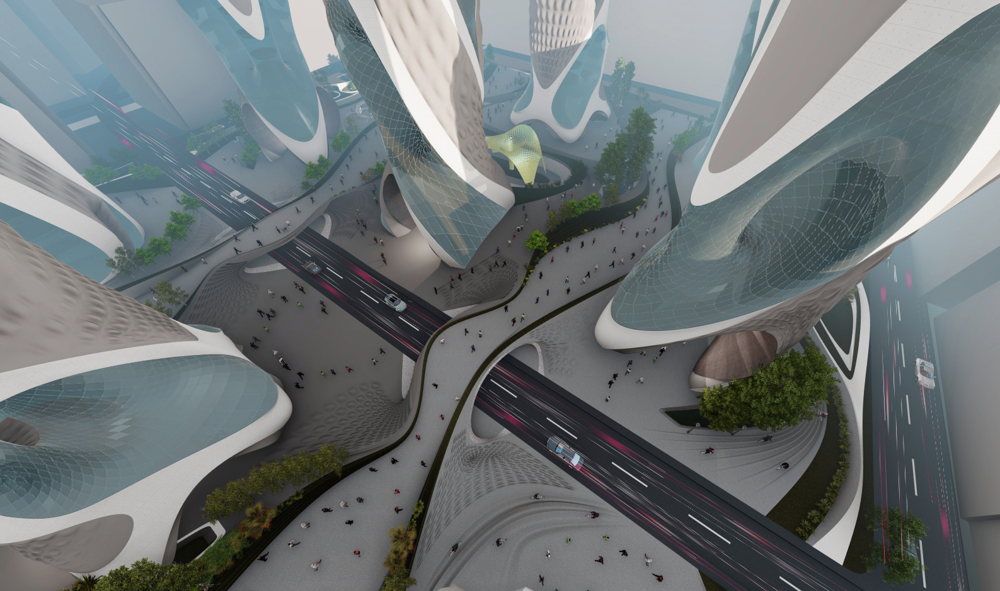
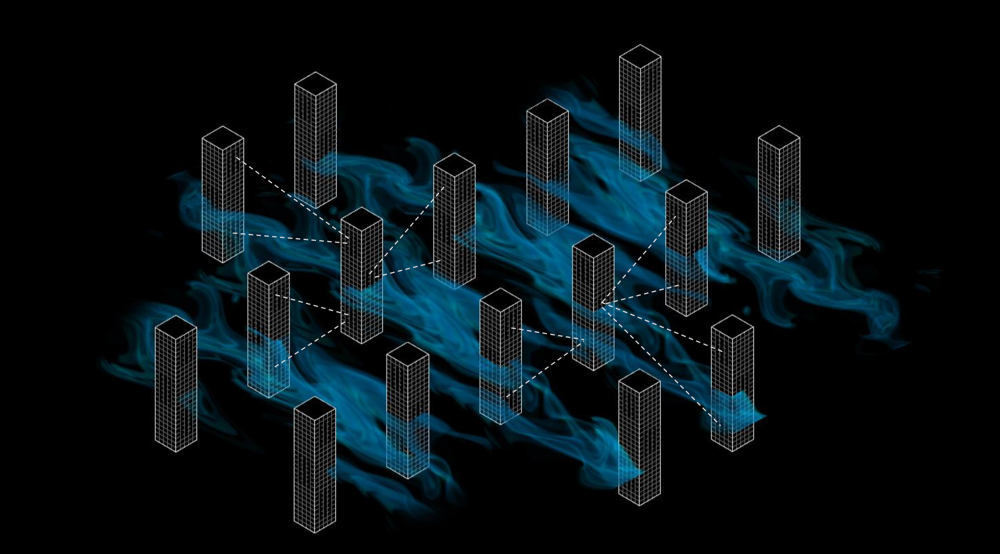
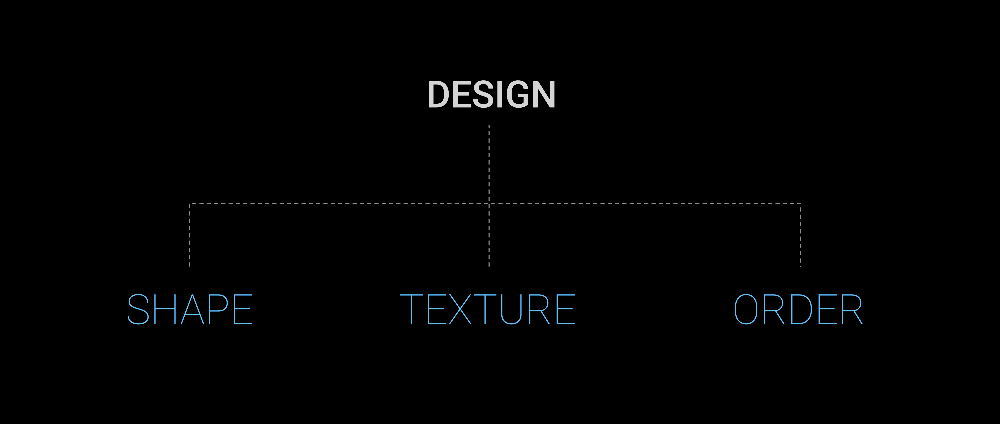
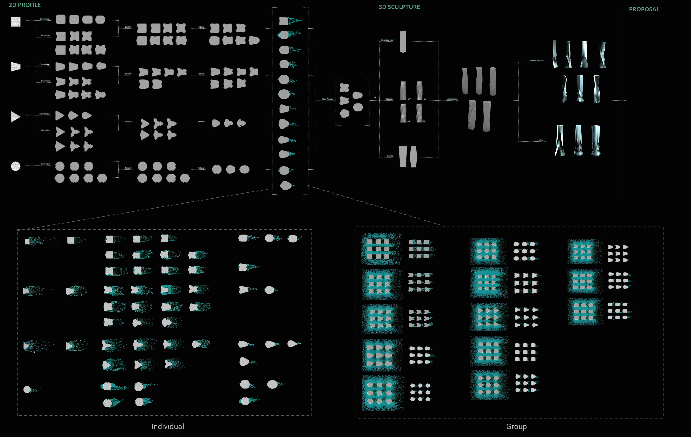
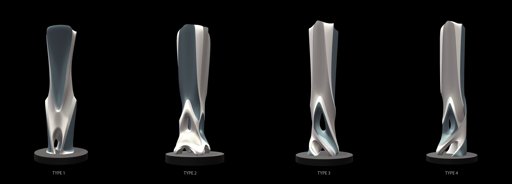
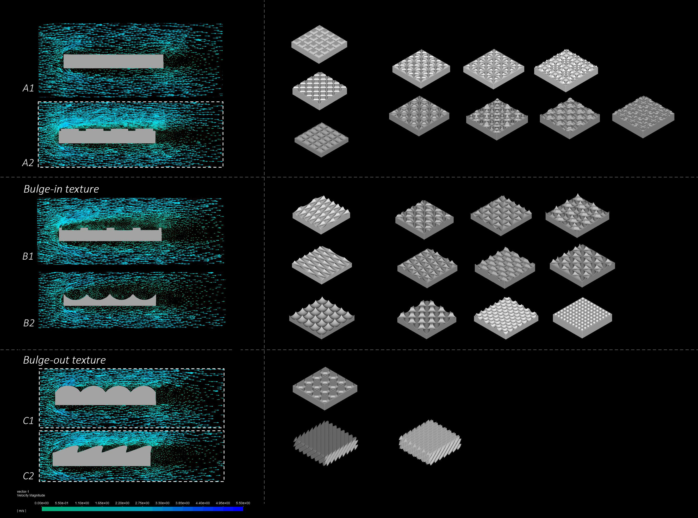
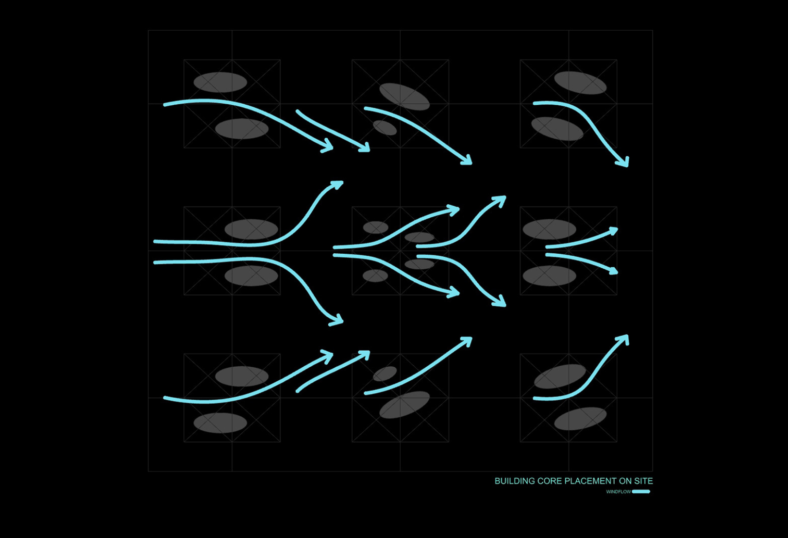
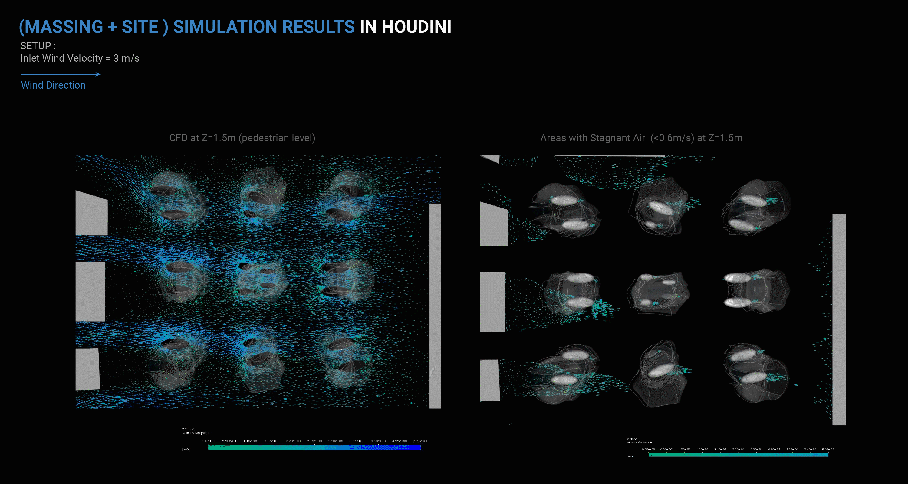
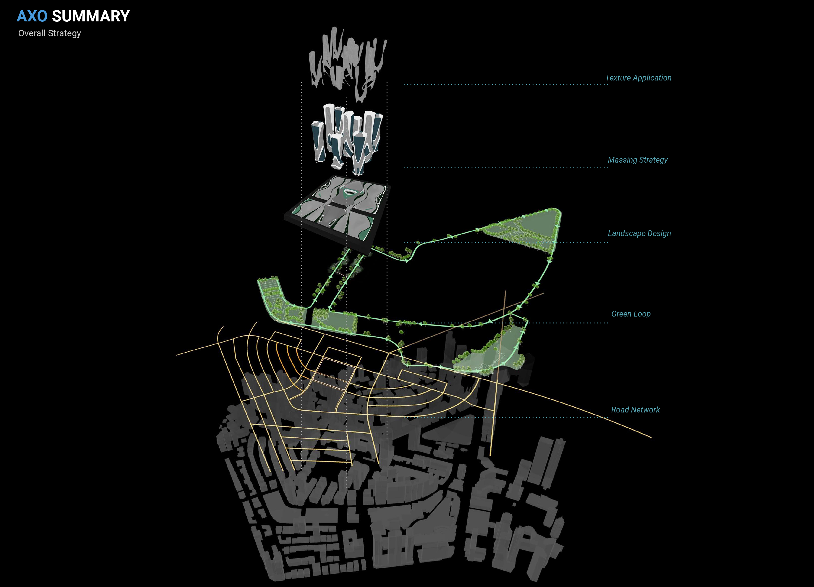
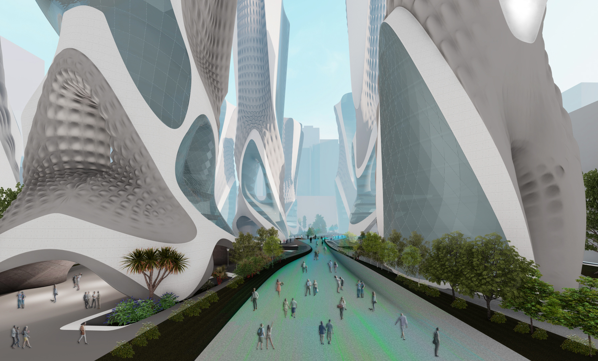

Towards Wind-Induced Architectural Systematization
Summary
The thesis presents the premise of collective behaviour of singular units as a design asset in urban environment. The collaborative effect of building shapes, surface texture and the order of buildings on wind patterns in the urban were explored and analysed. The results revealed that these three factors are imperative to effectively design airflow and air velocity to create cooling effects in warm urban environments. The study intends to solve the problem of compact building blocks which create stagnant air in outdoor urban spaces that worsens outdoor urban thermal comfort. As the study involves a large scale urban area which requires tremendous simulation time, this thesis would also demonstrate an alternative workflow in studying computational fluid dynamic (CFD) through utilizing Houdini which is an animation software to predict wind flow patterns in an urban context in a faster way which is highly beneficial for conceptual design stage.About Me
Cheska is a MArch student at the Singapore University of Technology and Design and holds a degree in Architecture and Sustainable Design. Cheska aims to explore how science and technology can be used to improve the performance of buildings both socially and environmentally. She specializes in design and rationalization of complex geometry with Maya, Rhino and Grasshopper. She has previously worked at architectural firms such as Surbana and Aedas.Name
Cheska Daclag Nodado
Mentor
Kenneth Tracy/Christine Yogiaman
Typology
Urban Research
Site Location
Makati, Philippines

![]()
![]()
![]()
![]()


Collaborative Behaviour of Urban Blocks
There is a distinct wind pattern differences when studying the effects of buildings individually and in groups. The wind flow pattern of such buildings starts to alter when they are laid in cluster. Compact building blocks create stagnant air in outdoor urban spaces that worsens outdoor urban thermal comfort (Li.Y,2018). As the high rate of urbanization in cities has largely affected low-level air flow and high heat island intensity, it is paramount to analyse the effects of buildings on urban wind patterns in groups. Collaborative behaviour of urban blocks refers to the relationship between buildings and their surroundings. The main feature of this behaviour is that tiny movements of an individual unit can add up to an enormous scope. This interesting ordering phenomena can be found in nature where animals in groups such as fish schools or birds flying in V pattern move in appropriate formations with exact spacing between individuals to achieve significant energy savings benefit, create vorticity in their wake or distort the flow patterns (Fish,2005). The creation of field around these living beings would be impossible unless they worked together. Similarly, the air flow patterns around buildings are considerably influenced by buildings around them. Hence, the premise of collaborative behaviour of singular units can be applied in the urban environment where there is potential that buildings can work together to build an ambient environment that is good for the collective urban blocks.

Reimagining Cities
The air movement within the city depends on its morphology, its street design and orientation, and its form. In the same manner, the shape of the cities are significantly influenced by its local climate to create spaces that are thermally comfortable. The research intends to make use of the collective behaviour as a design asset in urban environment. It intends to understand the collaborations of e buildings in the CBD Area as a sustainable approach to improving urban ventilation and, eventually, thermal comfort as compared to individual architectural strategies. The building form and surface texture have the ability to design airflow and air velocity to create cooling effects in warm urban environments. However, as the design ability and capacity of an individual building to control outdoor airflow movement will not suffice in a large-scale urban setting, a coordinated design of buildings is necessary. To achieve a collective design that can pattern airflow, simulations were conducted to study the shape of the buildings, the texture, and the order of the blocks in the urban setting.Design Workflow
In the context of assessment of natural ventilation in urban areas, a large number of investigations have been conducted in recent years, and CFD method has been introduced as an appropriate approach. CFD is a tool with stunning flexibility, accuracy and broadness of use. The technique has a high consistency with experimental outputs which in turn is the indication of its high accuracy. The most significant imported data for benefiting the CFD method is the amount of wind speed and direction. VISUALISATION OF RESULTS USING AN ANIMATION SOFTWARE CFD simulations of detailed design in an urban scale using Ansys is accurate, however, it is time consuming. To obtain a fast and informative solution to designers during early conceptual design, this study introduces Houdini as animation software for simulating windflow. As the paper is studying buildings in an urban context which involves heavy data, it is essential to have an alternative workflow to streamline and amplify the research work by allowing a researcher to consider tens to hundreds of design variations in an urban scale. The Houdini animation software is capable of giving quick and close to accurate CFD results. Houdini setting were then calibrated to match with the CFD results of Ansys and improvements were done with the setup to improve accuracy and consistency of results with more animation frames.


Research and Design Development
The project started from investigating the unit behaviour of various forms and surface textures which have the ability to design airflow and air velocity to create cooling effects in warm urban environments. CFD simulations were conducted to study the shape of the buildings, the texture, and the order of the blocks in the urban setting.
SHAPE STUDY
Basic geometries were used as a starting point of the experiment such as square, triangle, trapezoid and circle. Strategies were then applied such as chamfering and funnelling at first stage. The resulting profiles were then smoothen and rebuilt for second and third stage respectively. At fourth stage, the 2D profiles were filtered based on their performance in the CFD simulation. The results were ranked based on the average wind velocity and percentage of stagnant air for each 2D profile. These filtering method were used until the results were filtered to the best 2D profiles which were then used as basis for 3D sculpturing.


TEXTURE STUDY
A total of 25 tiles of different textures were tested for CFD simulation to understand each unit behaviour in relation with the incoming wind of 3m/s. The goal for this exploration is to apply the texture to the geometric form derived from the shape study in the desire that it would amplify the performance of the 3D form and minimize the area with stagnant air in the urban. From the CFD simulation, the results shows that bulging out textures have the ability to let the air stick to the texture closer and maintain the wind velocity as seen from the simulations C1 and C2. This effect is in contrast with the carving in or bulging in textures which creates turbulence instead and causes the wind to move away as displayed in image B1 and B2. In view of this, bulging out textures are more preferred as it is able to let the wind stick to the geometric form and maintain the original wind velocity which is highly desirable when combined with the strategy to guide the wind towards the stagnant areas.
ORDER AND PLACEMENT OF VOIDS
The form was further developed by creating voids at buildings to allow penetration of air and dispersion to stagnant areas and effectively improve the surrounding wind environment. The voids enabled the wind distribution to be more even around the buildings and eventually lessen the areas of wind shadow at pedestrian level. The voids are generally placed at the ground floor level. This creates variations of building core placement at the site area which can be properly arranged and ordered to respond and pattern the incoming wind.



